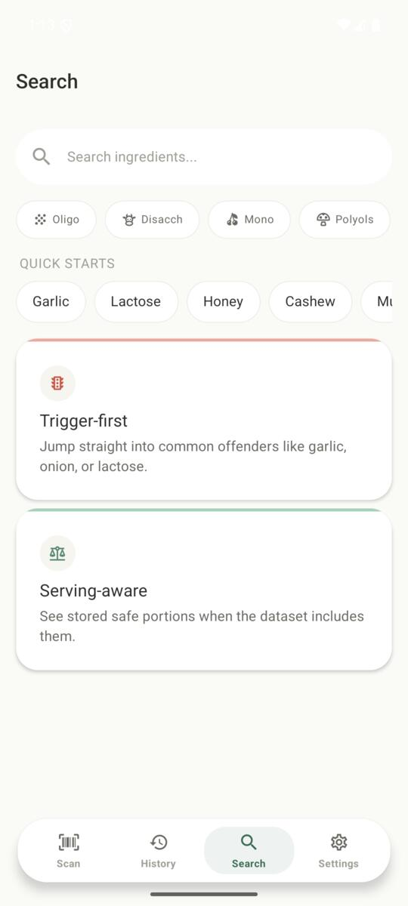
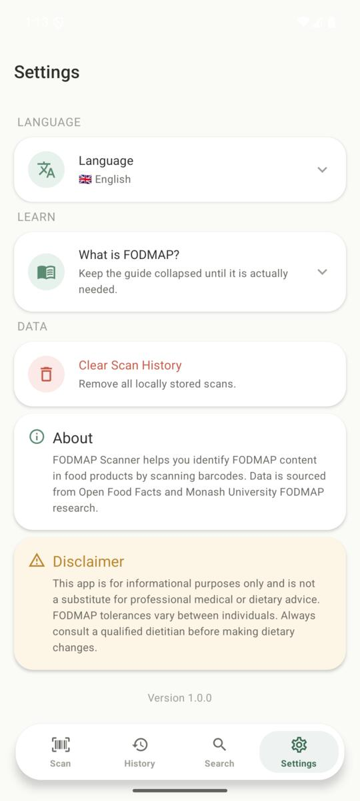

Instantly check the FODMAP content of any food product by scanning its barcode. Get a clear score, see which categories are safe, and eat without the guesswork.
Verifiez instantanement le contenu FODMAP de n'importe quel produit alimentaire en scannant son code-barres. Obtenez un score clair et mangez sans stress.
Pruefen Sie sofort den FODMAP-Gehalt jedes Lebensmittels durch Scannen des Barcodes. Erhalten Sie eine klare Bewertung und essen Sie ohne Ratespiel.
Download for Android Telecharger pour Android Fuer Android herunterladen
Scan any barcode and get an instant 0–100 FODMAP score with a traffic-light rating. Scannez un code-barres et obtenez un score FODMAP 0-100 avec un feu tricolore. Scannen Sie einen Barcode und erhalten Sie sofort einen FODMAP-Score von 0-100.
See each of the 6 FODMAP categories with clear traffic-light indicators per ingredient. Consultez les 6 categories FODMAP avec des indicateurs clairs par ingredient. Sehen Sie alle 6 FODMAP-Kategorien mit klaren Ampel-Indikatoren pro Zutat.
All your scans are saved locally on your device. Review past products anytime, even offline. Vos scans sont sauvegardes localement. Consultez vos produits a tout moment, meme hors-ligne. Alle Scans werden lokal gespeichert. Sehen Sie vergangene Produkte jederzeit ein, auch offline.
Available in English, French, and German — with ingredient matching in all three languages. Disponible en anglais, francais et allemand — avec correspondance d'ingredients dans les 3 langues. Verfuegbar auf Englisch, Franzoesisch und Deutsch — mit Zutatenerkennung in allen drei Sprachen.




